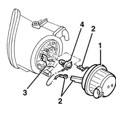
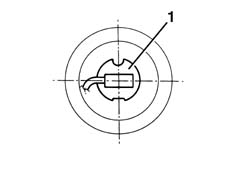
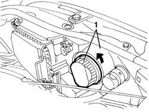
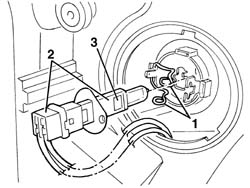
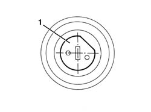

5540B24 MAIN HEADLAMP BULB (1), LH OR RH - R R
- Path
- Procedures > 55 ELECTRICAL EQUIPMENT > 5540 EXTERIOR LIGHTING > 5540B HEADLAMPS > 5540B24 MAIN HEADLAMP BULB (1), LH OR RH - R R
- Kind
- repair procedure (removal / refitting; the operation number is the code)
- Applies to
- all engines; all production periods
- Interactive page
- https://sloeber94.github.io/elrnDB-fMltpl/en/#/2891926
Applies to: all engines; production: fino a 05/99, da 09/03, da 06/99 a 03/02, da 04/02 a 08/03, fino a 05/04
 Removing
Removing
 Refitting
Refitting.
1. Rotate the lamp cover in an anti-clockwise direction and remove it.
2. Disconnect the electrical connections.
3. Release the retaining spring.
4. Extract the bulb from the lamp.

Applies to: all engines; production: fino a 05/99, da 09/03, da 06/99 a 03/02, da 04/02 a 08/03, fino a 05/04
Refitting
RemovingCheck the condition and the cleanliness of the lamp.
1. Fit the lamp, positioning it as illustrated in the diagram.

Applies to: all engines; production: fino a 05/99, da 09/03, da 06/99 a 03/02, da 04/02 a 08/03, fino a 05/04
Fasten the retaining spring.
Connect the electrical connections.
Refit the lamp cover and rotate it in a clockwise direction.
.
Check the operation of the bulb.
Applies to: all engines; production: da 06/04
Removing
Refitting- Open the bonnet.
- Rotate in an anti-clockwise direction and extract the cover.

Applies to: all engines; production: da 06/04
- Release the bulb retaining clips.
- Extract the bulb holder and bulb.
- Extract the bulb from the bulb holder.

Applies to: all engines; production: da 06/04
Refitting
Removing- Check the condition of the bulb and make sure that it is clean.
- Fit the bulb in the bulb holder.
- Position the bulb holder as illustrated.
- Attach the retaining clips.

Applies to: all engines; production: da 06/04
- Position the cover rotating it in a clockwise direction.
- Check that the bulb is working.